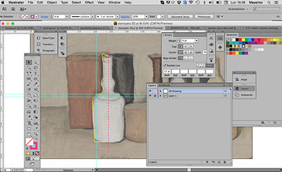
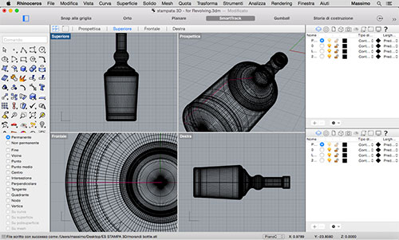

Design and 3D print an object (small, few cm) that could not be made subtractively. 3D scan an object (and optionally print it)
For this exercise I will try to 3D print the case of my object/project. I already prepared a first version of a 3D model in Rhino for Exercise 01. In these days I am working to launch Polifactory, the new makerspace of Politecnico di Milano (open 19th march). In these days I am setting up a new 3D printer, a WASP 20 40. For this reason, I need one/two days more to complete this task and 3D printing these two objects. Moreover, for Polifactory Open day we are started to prepare a small exhibition combining arts and 3D printing. We are choosing/selecting bottles from famous painting (e.g. Morandi, Cezanne, Picasso,) and we want to create 3D models to be 3D printed.
Download 3D model (first version)For this exercise, I tried to 3D scan three different objects using 123Dcatch: A green chair, an orange electrotool (black&decker) and a common plug.
For the open day at Polifactory (19th of march, www.polifactory.polimi.it) me and other two colleagues have tested our new 3D printer a Wasp Delta 20 40 (20X20X40 cm printing area, it is made in Italy by a Italian small manufacturers). So, we decide to create a micro exhibition named Open Masterpieces (Polifactory page on Thingiverse) making sense to a 1 week of testing to set up the new machine.The concept and the process of Open Masterpieces is very simple:
First of all I download an image of a painting created by the Italian artist Giorgio Morandi. The subject is a still life and contains a set of bottles. Using Illustrator I create a first 2D drawing of a bottle having attention to draw smooth curves. I exported an SVG file and imported in Rhino in order to create a 3D model using the command revolution. Then I create a mesh and I select the object to be 3D printed exporting a .stl file. Using Cura I set up all the parameters for 3D Printing (Patrizia Bolzan, a PhD student very expert in 3D Printing give me some tips for the best set up). I choose a white PLA in order to valorize the shape and the volume of the bottle. Finally I generate a GCode. As a first attempt the result is partially good. But the are some problems. The shape is not totally closed the are some breaches in the volume. Moreover the surface shows some imperfections. I will 3D print a second version of the bottle using another PLA (orange).
  Download 2D drawing
Download 3D model
3D Printing is a very artisanal process. I have to pay a lot of attention in the design and 3D modelling phases (modifying curves to be better 3D printed and requiring and extreme accuracy of the 3D models). Moreover a lot of things I have to learnt to better set-up the 3D printing phase before to set-up the machine. The Open Masterpieces has represented a first opportunity to make pratice with 3D modeling and 3D printing. The micro exhibition has been a little success. In the first days each 3D model has been observed by more or less 150 people and downloaded 15 times.